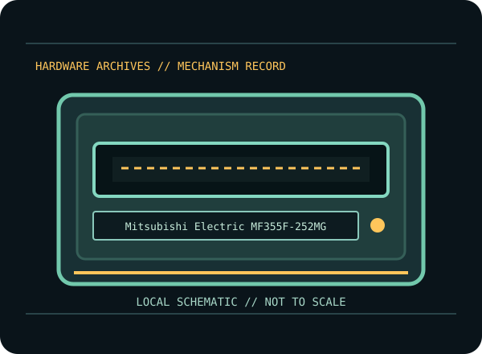

[ INDIVIDUAL COMPONENT // FLOPPY DRIVES ]
Mitsubishi MF355F-252MG 3.5-inch Floppy Mechanism
An internal 3.5-inch magnetic disk mechanism cataloged by its complete model code. Product-family similarity is not proof of identical wiring, media support, board straps or mechanical fit.

MODEL IDENTIFICATION: Mitsubishi Electric MF355F-252MG. Confirm the complete label and board revision before wiring, servicing, or media access. Approximate dimensions and common PC-format operation do not replace the suffix-specific source drawings.
Documented mechanism characteristics
| Manufacturer / exact model | Mitsubishi Electric / MF355F-252MG |
|---|---|
| Capacity and format | 3.5-inch double-sided HD/DD mechanism; 1.44 MB (2HD) and 720 KB (2DD) formats when paired with matching media/controller. |
| Interface and power | 34-pin Shugart/PC-compatible floppy-control ribbon; separate DC power connector. Verify exact connector and rail requirements against the full suffix manual. |
| Data rate | 500 kbit/s for 1.44 MB HD; 250 kbit/s for 720 KB DD under standard PC formats. |
| Mechanical dimensions (W × H × D) | Approx. 101.6 × 30 × 150 mm (W × H × D); confirm mounting ears/bezel and suffix drawing before fitting. |
| Jumpers / drive select | The available product sheet does not establish a jumper map for this suffix. Read board silkscreen and the exact wiring/manual; do not assume a DS0/DS1 strap from another MF355F revision. |
Controller and cable compatibility
- For ordinary PC use, confirm the controller supports the selected 3.5-inch format and rate, and use a correctly keyed 34-pin ribbon with the correct pin-1 orientation and separate drive power.
- On conventional PC twisted-ribbon cabling, cable position and drive-select straps work together to establish A:/B: addressing; untwisted systems may use different DS settings. Follow both the drive manual and host/controller documentation.
- Do not assume DOS/BIOS support for extended formats, three-mode disks, non-PC READY/disk-change behavior, or flux-level preservation from the 34-pin connector alone. Verify electrical signals and controller capability first.
Preservation and service cautions
- Inspect media for mold, oxide shedding, a damaged shutter, or debris; never insert visibly damaged media into a valued mechanism.
- Do not force the eject mechanism, move the head by hand, lubricate by guesswork, or adjust alignment without the matching service procedure and calibration equipment.
- Before cleaning/service, photograph the full label, board revision, straps, cable orientation and host setup. Preserve original media and raw disk images; verify copies and record checksums separately.
- Use known-good expendable media and stop on abnormal noise, repeated retries, head contamination or unstable reads. A filesystem copy may omit weak bits, unusual formats and copy-protection data.
Manufacturer / service-manual sources
- Mitsubishi Electric — MF355F-252MG product information (archival copy)Model-specific product documentation.
- Mitsubishi — MF355 family specifications (archival scan)Related-family specifications; not a substitute for the exact suffix wiring drawing.
- IBM — Personal Computer Technical ReferencePC floppy controller and 34-pin cable context.
Follow model- and revision-specific documentation. Related-family manuals provide context only where explicitly noted and must not be treated as interchangeable service instructions.